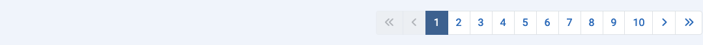

Purpose¶
Most components have list views that display items from the database. There may be hundreds of items, thousands perhaps, or even millions. The default List Limit, the number of items shown in a page of results, is usually 20. Beneath each page of results, if there are more results than the current limit, you will find a Pagination bar:

With the first number in the Pagination bar selected, the first 20 results will be displayed in the list, or whatever number of results the List Limit has been set to. Select the next number or the Next icon () to move on to the next page of items.
The maximum number of pages displayed in a single pagination bar is 10. However, page numbers below and above the current page are displayed to make it easy to move on or move back a page at a time.
Here is a screenshot of the Plugins list having moved on to Page 10 with the List Limit set to 5:

The Icons
- Go to the First page.
- Go to the Previous page.
- Go to the Next page.
- Go to the Last page
On page one the First page and Previous page icons are disabled. On the last page the Next page and Last page icons are disabled.